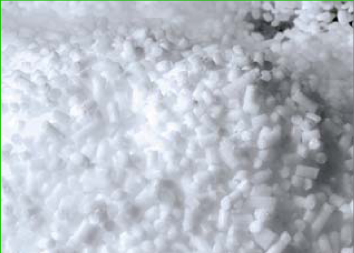
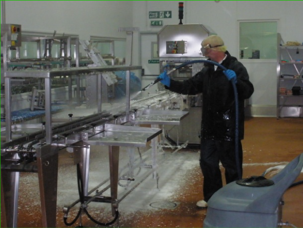

Bienvenido a Criomaq y L.E.C.
(Limpieza Ecológica Criogénica)
CRIOMAQ, con su sistema de Limpieza Ecológica Criogénica (L.E.C.) forma parte de un tejido empresarial presente en el mercado argentino, de consolidada experiencia en el campo de la ingeniería aplicada a tecnologías de innovación. Nuestra actividad se ha centrado hasta la fecha en el desarrollo y ejecución de proyectos dirigidos al CO2 y sus aplicaciones en limpieza a través del Hielo Seco.
Siguiendo esta línea, CRIOMAQ nace con el apoyo de MEC con el objetivo de hacer frente a la demanda de equipos y servicios de limpieza industrial por medio de proyección de hielo seco (Dry Ice Blasting) como una alternativa revolucionaria frente a los métodos tradicionales.
CRIOMAQ presenta una revolucionaria alternativa respecto a los tradicionales métodos de limpieza industrial para la renovación y mantenimiento de maquinarias, equipos y sus componentes. El método es comúnmente conocido en el mercado por su nombre "Dry Ice Blasting", que literalmente significa "chorro de hielo seco" y que también suele ser denominado Limpieza Criogénica.
El método Chorro de Hielo Seco puede ser utilizado con grandes ventajas en una gran variedad de industrias, lo cual queda reflejado en el hecho de que damos servicio a clientes tan diversos como: industria cervecera, biotecnología, naviera, industria gráfica, limpieza post incendio, industria alimenticia, industria farmacéutica y cementera.
Nuestros equipos
Servicio Liviano
Lanzadora de Hielo seco LCA 10 de CRIOMAQ
La Lanzadora de Hielo Seco (dry ice blaster) LCA 10 es un modelo versátil que puede operar con compresores de aire de entre 5 y 15 HP. De esta manera puede utilizarse tanto para Detailing como para limpiezas industriales en PyMES. Es de bajo costo inicial y bajo mantenimiento.
También permite regular el consumo de hielo seco habilitando tanto a limpiezas delicadas como máquinas industriales. Viene provista de mangueras y 6 boquillas diferentes que permiten realizar diversos tipos de limpieza.
| Especificaciones Lanzadora LCA 10 | |
|---|---|
| Potencia del Motor | 370 W |
| Tensión | 220 Voltios 50 Hz |
| Protección del motor | IP 54 |
| Consumo de Aire | 0,8 a 3 m³/min (800 a 3.000 lts/min) |
| Presión de Aire | 1 a 9 bar (kg/cm²) |
| Consumo de Hielo Seco | 0 a 45 kg/hora |
| Capacidad de la Tolva | 11 kg |
| Diámetro de los pellets | 2,5 mm |
| Peso del equipo | 45 kg |
| Dimensiones | 510 x 460 x 910 mm |
Linea Industrial
MEC CRIOS Microblast MB
Los equipos MB son el modelos para aplicaciones industriales con optima relacion calidad precio. Diseñadps y fabricados en Italia por la empresa MEC que cuenta con mas de 45 años de trayectoria en la fabricacion de equipos criogenicos.
Construidos en acero inoxidable. Son las herramientas ideales para limpiezas industriales sin abrasivos y amigables con el ambiente.
Division Hielo Seco
Nuestra area de provision de Hielo Seco se orienta a optimizer la logistica de provision de Hielo Seco, tanto para las Industrias: Alimenticias, Farmaceuticas y de Limpieza Criogenica.
Contamos con la logistica apropiada para garantizar la calidada requerida por nuestros clientes.
Division Hielo Seco: WA: 11 3631 1455
Aplicaciones
- Fundiciones
- Incendios
- Robótica
- Industria Automotriz
- Ductos de ventilación
- Restauración Edilicia
- Imprentas, indus. gráfica
- Calderas
- Tableros eléctricos
- Circuitos electrónicos
- Industria alimenticia
- Máquinas encoladoras
- Motores
- Generadores
- Industria Naval
- Industria Ferroviaria
- Barricas de vino
- Madera, Papel
- Industria del vidrio
- Fabricas de envases
Car detailing
Estator motor eléctrico
Antes y despues
¿Cómo funciona la Limpieza Criogénica?
1. Efecto Cinético: el hielo seco impacta sobre la suciedad y la rompe.
2. Impacto Térmico: el choque térmico inmediato (-78,5°C), provoca una violenta contracción del material y fragiliza la capa superficial.
3. Sublimación: el CO2 sublima, estalla y se transforma en gas instantáneamente. Esto rompe la suciedad, que cae y deja la superficie completamente limpia y seca.
4. Se quitan los restos de suciedad que se desprendieron de la superficie y ¡Listo!
¿Cuales son sus beneficios?
- Es una Limpieza NO Abrasiva, quiere decir que no afecta la superficie tratada.
- Equivale a una limpieza seco, ya que no es corrosiva.
- El Ice Blasting es efectivo y no es agresivo como el granallado, el arenado o el hidrolavado.
- Solamente se desprende la suciedad existente, sin agregar residuos del agente limpiador.
- El Ice Blasting cuida el medio ambiente, ya que no utiliza productos químicos.
- Es bactericida, por lo tanto, muy apto para la industria alimenticia y farmacéutica.
- No es conductora de la electricidad, esto hace que se puedan limpiar tableros e instalaciones eléctricas bajo carga hasta 1 Kvolt.
- A primera vista parece costosa, pero es muy económica ya que no hay que desarmar máquinas ni instalaciones para llegar a los intersticios, cosa que la hace rápida y profesional, minimizando los tiempos de parada.
Sistema L.E.C.
(Limpieza Ecológica Criogénica)
- 
- 
Asistencia Técnica:
Con L.E.C. ponemos a disposición personal especializado, con acceso a múltiples equipos para aplicaciones específicas, para asistir a nuestros clientes para la selección del equipo apropiado, tipos de accesorios, pistolas, boquillas, capacitación de aplicadores y Servicios de Ingeniería para soluciones especiales.
Proyectos Especiales:
Le proponemos que nos describa su proyecto o necesidad específica, y nosotros le diseñamos y fabricamos el equipamiento acorde a su necesidad
Limpieza Ecológica Criogénica
Tecnología que utiliza el Jet de hielo seco, que genera la energía cinética necesaria para romper la capa superficial de la suciedad. Luego el hielo seco produce micro estallidos, generando el desprendimiento de la suciedad, al tiempo que se evapora el CO2.
Tratándose de un proceso completamente libre de humedad y que no crea conducción de electricidad, se puede utilizar en lugares donde no hay cabida para los métodos tradicionales. Es perfectamente viable, por ejemplo, para la limpieza de motores e instalaciones con componentes eléctricos, neumáticos o hidráulicos.
No genera residuos secundarios, sólo queda el polvo residual desprendido de la superficie limpiada que podrá ser posteriormente barrida o aspirada.